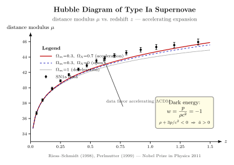

为什么宇宙在加速膨胀?
上一节我们写下了 Friedmann 方程, 假设宇宙均匀各向同性、由理想流体填充. 我们看到第一 Friedmann 关心的是 $\dot a^2/a^2$ — 膨胀速率与能量密度的关系; 第二 Friedmann 关心的是 $\ddot a/a$ — 膨胀的加速度与"能量密度加三倍压强"的关系. 那时我们没追究一个问题: 真实宇宙里 $\ddot a$ 是正还是负? 这个问题 1929 年 Hubble 之后就一直挂着, 但直到 1998 年才有人把它真正测出来.
1998 年 Riess-Schmidt 团队 (High-Z Supernova Search Team) 与 1999 年 Perlmutter 团队 (Supernova Cosmology Project) 各自独立给出答案 — 而且答案让所有人吃惊: $\ddot a \gt 0$. 宇宙不仅在膨胀, 还在加速膨胀. 这意味着第二 Friedmann 右边必须是负, 也就是 $\rho+3p/c^2 \lt 0$. 普通物质 ($p\geq 0$, $\rho\gt 0$) 给不出这个; 辐射 ($p=\rho c^2/3$) 也不行. 必须有某种负压物质主导今日宇宙 — 我们叫它"暗能量". 这一节就讲怎么从 SN1a 观测倒推到这个奇异组分, 它最简单的样子是 Einstein 1917 年为另一个目的引入的宇宙学常数 $\Lambda$, 而 $\Lambda$ 的微小数值给量子场论留下了 21 世纪最尴尬的一道题.
一、加速判据: 第二 Friedmann 翻给你看
从第 22 节, 我们有了带宇宙学常数的 Friedmann 方程组. 假设宇宙是平的 ($k=0$), 主成分是物质 (尘埃, $p_m=0$, $\rho_m\propto a^{-3}$) 加上"$\Lambda$" 项. 第二 Friedmann (加速度方程) 是
$$ \frac{\ddot a}{a} \;=\; -\frac{4\pi G}{3}\Big(\rho + \frac{3p}{c^2}\Big) + \frac{\Lambda c^2}{3}. \tag{1} $$
注意 (1) 里有两件事让 $\ddot a$ 变正: 要么 $\rho+3p/c^2\lt 0$ (负压介质), 要么 $\Lambda\gt 0$. 这两件事其实可以统一: 把 $\Lambda$ 项搬到右边定义为一个真空"流体"
$$ \rho_\Lambda \;\equiv\; \frac{\Lambda c^2}{8\pi G}, \qquad p_\Lambda \;\equiv\; -\rho_\Lambda c^2, $$
那么它满足"状态方程 $w_\Lambda = p_\Lambda/(\rho_\Lambda c^2) = -1$" — 一种压强等于负的能量密度的"流体". 再代回 (1), $\Lambda$ 项就被改写成 $-(4\pi G/3)(\rho_\Lambda+3p_\Lambda/c^2) = -(4\pi G/3)(\rho_\Lambda - 3\rho_\Lambda) = (8\pi G/3)\rho_\Lambda$, 与原表达 $\Lambda c^2/3$ 一致. 这一翻牌的意义大: 我们可以把 Einstein 写在方程左边的 $\Lambda$ (作为时空几何的属性), 与 QFT 写在方程右边的真空能 (作为能-动张量的一项) 直接挂上等号. 它们在场方程里是同一个量, 区别只是想象空间.
更一般地, 一个状态方程 $w$ 的流体, 加速判据是
$$ \rho + 3p/c^2 \;=\; \rho(1+3w) \;\lt \; 0 \;\Longleftrightarrow\; w \lt -\tfrac{1}{3}. \tag{2} $$
所以"暗能量"的最低门槛是 $w\lt -1/3$. $\Lambda$ 是 $w=-1$ 的特例 (恰好 cosmological constant); 一般动力学暗能量模型 (quintessence 等) 允许 $w$ 时变, 但当前 Planck 2018 + DESI 2024 等观测都把它紧紧夹在 $w=-1\pm 0.04$ 之间. 我们在这一节就把它当 $-1$ 处理.
二、Type Ia 超新星: 标准烛光的逻辑
怎么测 $\ddot a$? 你需要一个"在不同时代有不同数量级"的可观测. 最有用的是距离-红移关系: 给定一个已知光度 $L$ 的源 (标准烛光), 你测它的视亮度 $F$, 由 $F = L/(4\pi d_L^2)$ 反算"光度距离" $d_L$; 同时你测它的红移 $z$. 在不同 $\Omega_m, \Omega_\Lambda$ 的宇宙里, $d_L(z)$ 是不同的, 远端 SN 的亮度差异就告诉你宇宙的几何与加速史.
Type Ia 超新星是被广泛接受的标准烛光: 一颗白矮星从伴星吸积达到 Chandrasekhar 极限 ($M_{\rm Ch}\approx 1.44\,M_\odot$) 后引发碳爆轰, 核反应释放的 $\sim 10^{44}\,$J 能量驱动一次极亮的事件, 峰值绝对星等 $M_B\approx -19.3$. 因为爆炸的物理是同一种, 不同 SN1a 的峰值光度散布很小, 而且通过亮度-下降率关系 (Phillips relation) 可以再校准, 把散布压到 $\sim 0.1$ 等 — 也就是 $\sim 10\%$ 的光度精度.
SN1a 的可观测是距离模数
$$ \mu(z) \;\equiv\; m_B(z) - M_B \;=\; 5\log_{10}\!\Big(\frac{d_L(z)}{10\,\mathrm{pc}}\Big), \tag{3} $$
其中 $m_B$ 是观测视星等, $M_B$ 是标定的绝对星等. 在 FRW 宇宙里光度距离
$$ d_L(z) \;=\; (1+z)\,c\!\int_0^z\!\frac{\mathrm{d}z'}{H(z')}, \qquad H(z) \;=\; H_0\sqrt{\Omega_m(1+z)^3 + \Omega_\Lambda}. $$
(假设平坦 $\Omega_m+\Omega_\Lambda=1$.) 算几个极端: 如果 $\Omega_m=1, \Omega_\Lambda=0$ (减速宇宙, "Einstein-de Sitter"), $H(z)\propto(1+z)^{3/2}$ 增长得很快, 积分给出较小的 $d_L$ → 远端 SN 应该比较亮; 如果 $\Omega_m=0.3, \Omega_\Lambda=0.7$ ("$\Lambda$CDM"), $H(z)$ 在 $z\lesssim 0.7$ 时较缓慢增长, 远端积分更大, $d_L$ 更大 → 远端 SN 应该比较暗.
1998 年的两组数据正落在第二条线上. 在 $z\approx 0.5$ 的 SN1a 比 $\Omega_m=1$ 的减速预测暗了大约 $0.2$ 等 — 也就是远了 $\sim 10\%$ — 这等价于 $\Omega_\Lambda\sim 0.7$ 的加速宇宙. 这就是图 1 所示的情形.

三、$\Omega_\Lambda$, $\rho_\Lambda$, 与一个数字
把今日观测拼起来. Planck 2018 + SN1a + BAO 联合给出 (取一份代表性的"基础 $\Lambda$CDM"参数)
$$ \Omega_\Lambda \;\approx\; 0.685, \qquad \Omega_m \;\approx\; 0.315, \qquad H_0 \;\approx\; 67.4\,\mathrm{km/s/Mpc}. $$
其中 $\Omega_\Lambda$ 是宇宙学常数贡献占临界密度的份额. 临界密度
$$ \rho_c \;=\; \frac{3H_0^2}{8\pi G} \;\approx\; 8.5\times 10^{-27}\,\mathrm{kg/m^3}, $$
所以暗能量的物质密度
$$ \rho_\Lambda \;=\; \Omega_\Lambda\,\rho_c \;\approx\; 0.685\times 8.5\times 10^{-27}\,\mathrm{kg/m^3} \;\approx\; 5.8\times 10^{-27}\,\mathrm{kg/m^3}. $$
等价的能量密度
$$ \rho_\Lambda c^2 \;\approx\; 5.2\times 10^{-10}\,\mathrm{J/m^3}. $$
把这个数字翻成"自然单位": 真空能 $\rho_\Lambda c^2$ 写成 $E_\Lambda^4/(\hbar c)^3$ 的能量尺度, 给出
$$ E_\Lambda \;\approx\; (\rho_\Lambda c^2 \cdot (\hbar c)^3)^{1/4} \;\approx\; 2\times 10^{-3}\,\mathrm{eV} \;\approx\; (10^{-3}\,\mathrm{eV})^4. $$
所以宇宙学常数对应的能量尺度大约是毫电子伏 — 比电弱标度 ($\sim 10^{11}\,\mathrm{eV}$) 低 14 个数量级, 比 Planck 标度 ($\sim 10^{28}\,\mathrm{eV}$) 低 31 个数量级.
Einstein 张量方程对应的 $\Lambda$ 数值则是
$$ \Lambda \;=\; \frac{8\pi G\rho_\Lambda}{c^2} \;\approx\; 1.1\times 10^{-52}\,\mathrm{m^{-2}}. $$
这个 $\Lambda$ 既小到日常实验完全测不出来, 又大到主导整个宇宙今日的膨胀.
四、$10^{120}$ 的尴尬: 宇宙学常数难题
现在说为什么这是 21 世纪最尴尬的物理. 量子场论里, 任何场 — Higgs, 电磁场, 电子场, 顶夸克场……— 都有零点能. 把所有模式的零点能加起来 (在 cutoff $\Lambda_{\rm cut}$ 之下), 给出真空能
$$ \rho_{\rm vac}^{\rm QFT} \;\sim\; \frac{\Lambda_{\rm cut}^4}{(\hbar c)^3}. $$
等效原理告诉你: 真空能必须引力, 它出现在 $T_{\mu\nu}$ 里, 它有 $w=-1$ — 它就是一个有效的 $\Lambda$. 现在代两个 cutoff 选择.
选 $\Lambda_{\rm cut} = M_{\rm Pl}c^2 \approx 1.22\times 10^{19}\,\mathrm{GeV}$ (Planck 标度, 物理上是引力进入量子的尺度), $\rho_{\rm vac}^{\rm QFT}\sim M_{\rm Pl}^4 c^5/\hbar^3 \approx 5\times 10^{96}\,\mathrm{kg/m^3}$. 与观测 $\rho_\Lambda \approx 6\times 10^{-27}\,\mathrm{kg/m^3}$ 比, 差了
$$ \frac{\rho_{\rm vac}^{\rm QFT}}{\rho_\Lambda} \;\sim\; \frac{5\times 10^{96}}{6\times 10^{-27}} \;\sim\; 10^{123}. $$
选 $\Lambda_{\rm cut}$ 等于电弱标度 $\sim 246\,\mathrm{GeV}$, 比值降到 $\sim 10^{55}$. 选 QCD 标度 $\sim 0.2\,\mathrm{GeV}$, 比值还是 $\sim 10^{40}$. 怎么选都比观测大很多个数量级. 习惯说法是$10^{120}$, 它正是 Planck cutoff 那一格的精确版本.
这就是宇宙学常数难题: 我们最成功的理论 (QFT) 朴素地给出一个比观测大 $10^{120}$ 倍的真空能; 自然必然存在某种几乎完美的抵消, 把这 $10^{120}$ 的"自然预期"压到只剩 $1$ 这个量级的尾巴 — 但抵消机制至今没人知道. 超对称、人择原理 (anthropic) 与多重宇宙 (string landscape) 各有支持者, 但都没能给出可证伪的预言. 这是 21 世纪基础物理最尖锐的几个问题之一.
注意一个常见误解: $10^{120}$ 并不是说 QFT "错"了 — QFT 在原子物理里精确到 $10^{-12}$. 错的是朴素加和真空能再代入引力这一步. 它告诉我们引力与量子场论的接口处缺了一块. 第 30 节量子引力时我们会回到这个问题.
五、Einstein 1917, 一生最大错误, 与 1998 复活
历史值得一提. 1917 年 Einstein 把广义相对论应用到整个宇宙, 当时人们普遍假设宇宙是静态的 (Hubble 1929 才发现红移-距离关系, 揭示膨胀). 但他发现自己的场方程 $G_{\mu\nu}=8\pi G T_{\mu\nu}/c^4$ 在均匀流体加引力下没有静态解 — 物质会被自身引力拉拢. 为了挽救静态宇宙, Einstein 在 1917 年的论文里在场方程左边加了一项 $\Lambda g_{\mu\nu}$:
$$ G_{\mu\nu} + \Lambda g_{\mu\nu} \;=\; \frac{8\pi G}{c^4}\,T_{\mu\nu}. $$
取适当的 $\Lambda\gt 0$, 这一项的"反引力"恰好抵消物质引力, 给出静态闭合宇宙 ("Einstein 静态宇宙"). 这是物理学第一次出现宇宙学常数. 但 1922 年 Friedmann 与 1927 年 Lemaître 各自发现, Einstein 静态宇宙是不稳定的 — 微小扰动就让它要么爆胀要么坍缩 — 物理上不成立. 1929 年 Hubble 观测红移-距离关系揭示宇宙膨胀, 静态宇宙的物理动机也消失了. Einstein 据 Gamow 回忆, 把 $\Lambda$ 称作"我一生最大的错误" (biggest blunder) — 因为如果他相信自己的方程, 1922 年就该预言宇宙膨胀.
1998 年 11 月与 1999 年初, Riess-Schmidt 团队发表 SN1a 观测的加速证据, Perlmutter 团队几乎同时独立给出同样结论. 三人共获 2011 年 Nobel 物理奖. 那一刻 $\Lambda$ 从"Einstein 的尴尬"变成"宇宙学的基石" — 它确实非零, 而且数值很小但不可忽略, 它今日主导宇宙总能量预算的近 70%. 一个戏剧性的反转: Einstein 加 $\Lambda$ 的物理动机 (静态宇宙) 是错的; 但 $\Lambda$ 这一项本身确实在场方程里, 数值要交给观测决定.
从变分原理看 (上一节我们做了 Einstein-Hilbert 作用量), $\Lambda$ 项是作用量唯一允许的"零阶"标量项, 任何对称性论证都不能让它先验为零. 它必然在那里; 测它就是宇宙学的工作. 1998 年观测为这个项贴上了一个非零数字标签.
六、$\ddot a/a$, 加速时代, 与一个简单估算
最后做一个具体估算: 今日宇宙的 $\ddot a/a$. 用 (1), $\rho_m+3p_m/c^2 = \rho_m$ (尘埃零压), $\rho_\Lambda + 3p_\Lambda/c^2 = -2\rho_\Lambda$. 所以
$$ \frac{\ddot a}{a}\Big|_{\rm today} \;=\; -\frac{4\pi G}{3}\rho_m + \frac{8\pi G}{3}\rho_\Lambda \;=\; H_0^2\Big(-\tfrac{1}{2}\Omega_m + \Omega_\Lambda\Big). $$
代入 $\Omega_m\approx 0.315, \Omega_\Lambda\approx 0.685$, 括号内 $\approx 0.528\gt 0$ — 所以确实 $\ddot a \gt 0$, 今日宇宙加速. 数值上 $\ddot a/a \approx 0.528 H_0^2 \approx 2.4\times 10^{-36}\,\mathrm{s^{-2}}$.
但若你倒回 $z\sim 0.7$ ($a\sim 0.6$), $\rho_m\propto a^{-3}$ 涨到 $\sim 5\rho_m^{\rm today}$, 而 $\rho_\Lambda$ 不变. 此时括号 $-\tfrac{1}{2}\cdot 5\Omega_m + \Omega_\Lambda \approx -0.79 + 0.69 \lt 0$ — 那时宇宙在减速. 所以"加速时代"是相对晚近的事 (大致 $z\lt 0.6$). 在更早的辐射主导期与物质主导期, 宇宙都在减速膨胀; 直到 $z\approx 0.6$ 物质密度稀释到不再主导, $\Lambda$ 才接过指挥棒. 这也解释为什么 1998 年才发现加速 — 我们恰好生活在 $\Lambda$ 接管的时代; 早于这个时代的宇宙学家 (假如有), 看到的是减速宇宙.
这给"宇宙巧合问题": 为什么恰好这个时代 $\rho_m\sim\rho_\Lambda$? 它在宇宙学时间线上是非常窄的一段 (其它时段里要么 $\rho_m\gg\rho_\Lambda$, 要么 $\rho_m\ll\rho_\Lambda$). 这与我们的存在是否相关 (人择论证), 还是有更深的动力学解释 — 还在争论.
小结
这一节我们从第二 Friedmann 方程的简单不等式 $\rho+3p/c^2\lt 0$ 出发, 找到加速膨胀必须的"负压物质", 把它最简单的形式 — 状态方程 $w=-1$ 的宇宙学常数 $\Lambda$ — 牢牢扣到 1998 年 SN1a 观测上. 公式 (1) 的加速判据告诉你必要的物理: $w\lt -1/3$. 公式 (2) 翻成宇宙学常数, 给出 $w=-1$ 的真空"流体". 公式 (3) 的距离模数 $\mu(z)$ 是 SN1a 观测可观测, 它在 $z\sim 0.5$ 比 $\Omega_m=1$ 的减速预测暗 $\sim 0.2$ 等, 直接证明宇宙加速膨胀. 数值上, $\Omega_\Lambda\approx 0.685, \rho_\Lambda\approx 6\times 10^{-27}\,\mathrm{kg/m^3}, \Lambda\approx 1.1\times 10^{-52}\,\mathrm{m^{-2}}$; 但 QFT 朴素估算给出 $\rho_{\rm vac}\sim M_{\rm Pl}^4 c^5/\hbar^3$ 比观测大约 $10^{120}$ 倍 — 21 世纪基础物理最大悬案. 历史上 Einstein 1917 引入 $\Lambda$ 想搞静态宇宙, 1929 Hubble 发现膨胀后他认为是"一生最大错误"; 1998 SN1a 观测给 $\Lambda$ 翻案, 2011 年 Nobel 奖给了三位发现者. $\Lambda$CDM 自此成为宇宙学的标准模型骨架; 但骨架里那个 $10^{-3}\,\mathrm{eV}$ 的能量尺度怎么来的, 还在等下一代理论. 下一节我们把目光挪到宇宙更早的时期, 看 CMB — 那张拍自 $z\approx 1100$ 的"宇宙婴儿照"如何独立确认 $\Omega_\Lambda\approx 0.7$ 与一切宇宙学参数.
▲